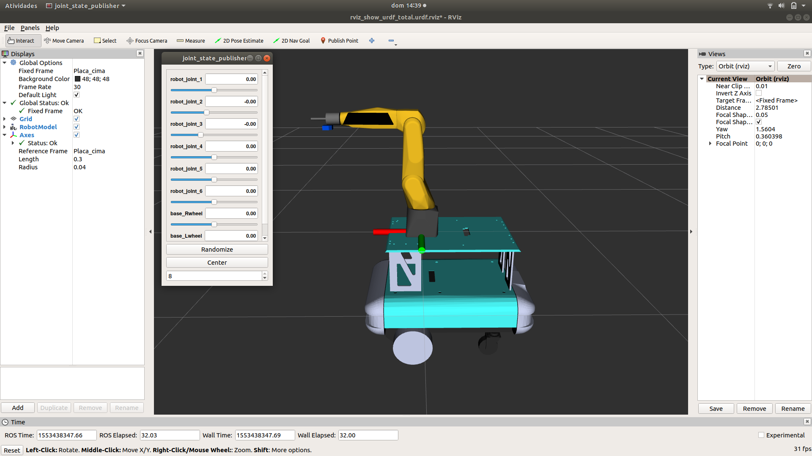
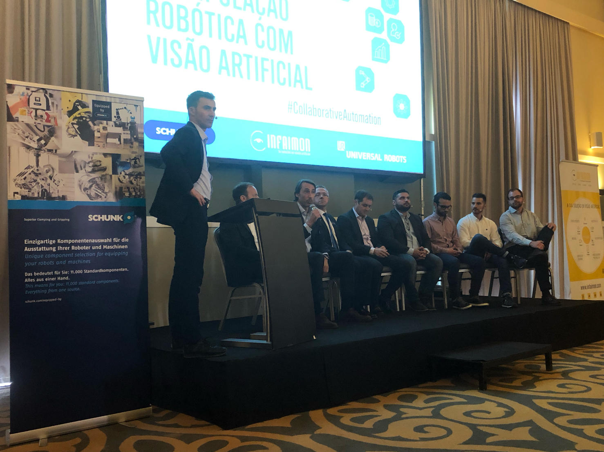

Iniciei esta semana com a conclusão do modelo global URDF do manipulador móvel, de modo a possibilitar a sua implementação no MoveIt! ou outra ferramenta semelhante. Para isso foi necessário alterar o modelo CAD de modo a conseguir associar uma junta em cada roda da plataforma, e criar um referencial base da plataforma denominado de “placa_cima” . Este referencial não foi designado de “base_link”, para não confundir com referenciais utilizados pelo Luís sarmento no modo navegação, contudo, caso haja necessidade, essa alteração é bastante fácil. Assim, para a junção do manipulador + plataforma bastou apenas criar uma “junta fixa”, entre os referencias base de cada sistema. O modelo final URDF pode ser visualizado na seguinte imagem:

Posto isto, procedeu-se a uma investigação aprofundada de modo a perceber as ferramentas disponíveis pelo moveit! para manipuladores moveis. Apesar de se ter encontrado algumas referencias a essa tarefa, não se encontrou nada verdadeiramente explicito. Paralelamente, realizou-se uma pesquisa à cerca do calculo da cinemática totalmente integrada de manipuladores moveis, de forma a perceber se o modelo concebido estava de acordo com as abordagens estudadas.
O dia de Quarta-Feira foi um dia atípico, uma vez que assisti a um evento (figura seguinte) cujo o foco era Robotica Colaborativa e Visão Artificial, orientado por 3 grandes nomes da industria: INFAIMON, SCHUNK e Universal Robots . Durante este evento, foi dado o conhecimento de projetos futuros das empresas presentes, dos quais estava incluído dois temas da minha dissertação, Manipulação móvel e Bin-picking.

Durante esta semana, foi necessário pensar na autonomia do robô e achou-se por bem, comprar um Inversor 48 → 220 V de 2000W de modo a alimentar o manipulador, o mini-pc, a kinect , e o laser. Assim, foi necessário perceber se o cabo alimentado pelas baterias totais (48V) , tinha uma área de secção suficiente para alimentar o inversor escolhido.